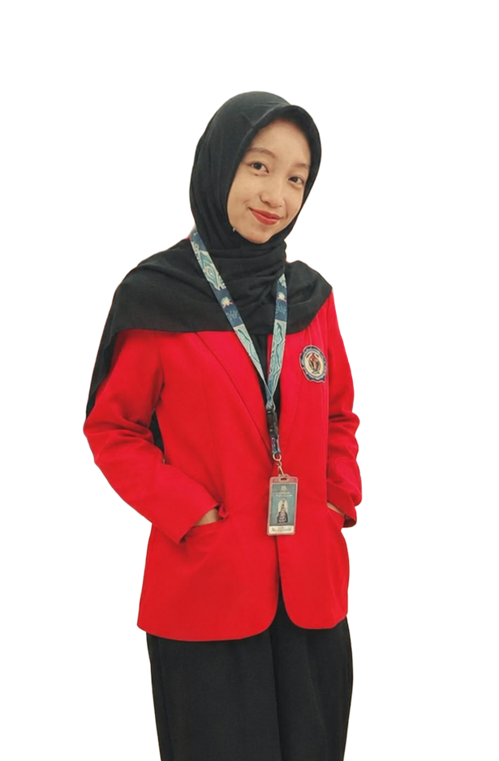

Balqis Winda
Amaliah
Terus belajar, mengeksplorasi hal baru, dan mengembangkan keterampilan serta memperluas pengalaman di bidang Sistem Informasi untuk menghadapi tantangan di era digital.

Tentang Saya
Sebagai mahasiswa Sistem Informasi semester 3 di Universitas PGRI Delta, saya memiliki ketertarikan pada pengembangan web dan berkomitmen untuk terus belajar, memperluas pemahaman, serta mengeksplorasi berbagai tools dan teknologi. Tidak hanya memahami cara kerjanya, saya juga ingin mengembangkan ide-ide kreatif dan menciptakan inovasi yang bermanfaat.
Python
PostgreSQL
Git & GitHub

Aplikasi desktop untuk mengelola stok barang di toko sembako. Pengguna bisa menambah barang, mencari barang berdasarkan kode, memperbarui stok, dan menghapus barang, sementara dashboard menampilkan jumlah jenis barang dan total stok. Semua data disimpan permanen di database SQLite, jadi tetap ada setelah aplikasi ditutup.
Terbuka untuk Peluang Baru
Siap memperluas pengalaman, membangun koneksi, dan berkolaborasi dalam berbagai kesempatan yang mendukung pengembangan diri.
Jangan ragu untuk menghubungi saya melalui kontak di samping atau melalui jaringan media sosial.